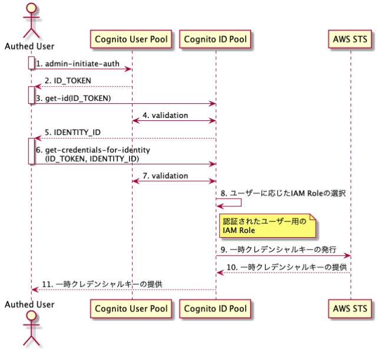

1. Cognitoで認証をして、AWSのリソースにアクセスする¶
実施手順とポイント
S3バケット作成
ConitoでUser Poolとユーザーを作成する
CognitoでIDPoolを作成する
Cognitoの認証されたユーザーに対するIAM権限を設定する。
Cognitoへ問い合わせしてクレデンシャルを取得する
クレデンシャルを利用して、AWS CLIからS3にアクセス
【＋α】ルールベースでIAMロールを割り当てる
1.1. 認証フローの違い¶
1.1.1. 認証している場合¶
User poolに対して、initiate-authでID _TOKENを取得(認証)
ID PoolからIDENTITY_TOKENを取得(認可)
STSからクレデンシャルの発行

aws s3 mv s3://ma-fujishiroms-bucket/cognito/test_img_copy.png ./test_img_comy.png
1.1.2. 認証していない場合¶
ID PoolからIDENTITY_TOKENを取得(認可)
STSからクレデンシャルの発行
1.2. S3バケット作成¶
S3バケットを作成する。アクセス制御はブロックしておく

1.3. Cognitoでユーザープールを作成¶
詳細は別ページ参照
この時に、アプリクライアントの設定で、クライアントシークレットの作成については無効化しておき、ALLOW_ADMIN_USER_PASSWORD_AUTHを有効化する
また、test userも作成しておく（有効化してもなんとかなるけど、Cognitoへのログイン設定が面倒）

1.4. CognitoでIDプールを作成¶
idPool名
同じユーザー内で一意にする認証していないID
有効化すると、認証していないユーザーへの権限が設定可能認証プロバイダ
前節で作成したCognitoのユーザープールの情報を設定

作成したIDプールのナビゲーションペインのサンプルコードからIDプールのIDを確認できる。 後から利用するので記録しておく。

1.5. 紐づくIAMの作成¶
作成したIDpool名を冠したIAMロールが存在するはずなので、そのロールのポリシーを編集していく。

今回は、以下の権限を付与する
認証ユーザー:S3バケット内のオブジェクト一覧表示とput/get
非認証ユーザー:S3バケット内のオブジェクト一覧表示
認証ユーザー(Auth_Role)に付与するIAMポリシーは以下
{
"Version": "2012-10-17",
"Statement": [
{
"Effect": "Allow",
"Action": [
"cognito-sync:*",
"cognito-identity:*",
"s3:ListBucket",
"s3:GetObject",
"s3:PutObject"
],
"Resource": [
"arn:aws:s3:::[YOUR_BUCKET_NAME]",
"arn:aws:s3:::[YOUR_BUCKET_NAME]/*"
]
}
]
}
非認証ユーザー(UnAuth_Role)に付与するIAMポリシーは以下
{
"Version": "2012-10-17",
"Statement": [
{
"Effect": "Allow",
"Action": [
"mobileanalytics:PutEvents",
"cognito-sync:*",
"s3:ListBucket"
],
"Resource": [
"arn:aws:s3:::[YOUR_BUCKET_NAME]",
"arn:aws:s3:::[YOUR_BUCKET_NAME]/*"
]
}
]
}
1.6. Python SDKからのアクセス¶
認証ユーザーとして処理を実行する場合は以下のコマンドを実行
対象bucketのオブジェクト一覧表示、ダウンロード、アップロードが成功する。
import boto3
###
# 設定情報
###
account_id = 'YOUR_AWS_ID'
user_pool_id = 'COGNITO_USER_POOL_ID'
client_id = 'COGNITO_APP_CLIENT_ID'
identity_pool_id = 'ap-northeast-1:COGNITO_ID_POOL_ID'
user_name = 'COGNITO_USER_NAME'
email = 'COGNITO_USER_EMAIL'
password = 'COGNITO_USER_PASSWORD'
bucket_name = 'YOUR_S3_BUCKET_NAME'
region = 'ap-northeast-1'
logins_key = f"cognito-idp.{region}.amazonaws.com/{user_pool_id}"
auth_flow = "USER_PASSWORD_AUTH"
###
# User Poolにログインする
###
idp_client = boto3.client('cognito-idp')
# ログインしてセッションを開始
response = idp_client.initiate_auth(
ClientId=client_id,
AuthFlow=auth_flow,
AuthParameters={
'USERNAME': user_name,
'PASSWORD': password
}
)
# IDトークン、アクセストークン、リフレッシュトークンを取得
id_token = response['AuthenticationResult']['IdToken']
access_token = response['AuthenticationResult']['AccessToken']
refresh_token = response['AuthenticationResult']['RefreshToken']
###
# ID Poolにログインする
###
identity_client = boto3.client('cognito-identity')
# アイデンティティIDを取得
identity_id = identity_client.get_id(
AccountId=account_id,
IdentityPoolId=identity_pool_id,
Logins={
logins_key: id_token
}
)['IdentityId']
credentials_response = identity_client.get_credentials_for_identity(
IdentityId=identity_id,
Logins={
logins_key: id_token
}
)
###
# ID Pool経由でSTSへのクレデンシャル発行を依頼する
###
Credentials = credentials_response['Credentials']
access_key_id = Credentials['AccessKeyId']
secret_access_key = Credentials['SecretKey']
session_token = Credentials['SessionToken']
###
# S3にアクセス
###
s3_client = boto3.client('s3',
region_name="ap-northeast-1",
aws_access_key_id=access_key_id,
aws_secret_access_key=secret_access_key,
aws_session_token=session_token
)
###
# オブジェクト一覧表示
###
object_list = s3_client.list_objects_v2(Bucket=bucket_name)
for obj in object_list['Contents']:
print(obj['Key'])
###
# ファイルアップロード
###
Filename = 'PATH_TO_UPLOAD_FILE_AT_LOCAL'
UL_Key = 'PATH_TO_S3_FILE'
s3_client.upload_file(bucket_name, Filename, UL_Key)
###
# ファイルダウンロード
###
Filename = 'DL_FILE_NAME'
DL_Key = "PATH_TO_DOWNLOAD_FILE_AT_S3"
s3_client.download_file(bucket_name,DL_KEY, Filename)
非認証ユーザーとして処理を実行する場合は以下のコマンドで実行
対象バケットの一覧表示のみが成功し、アップロードやダウンロードは権限的に失敗する。
import boto3
from botocore.exceptions import NoCredentialsError
session = boto3.Session()
cognito_identity_pool_id = 'ap-northeast-1:1f392b6a-751d-4760-8849-5924149f8e67'
###
# ID Poolにログインする
###
client = session.client('cognito-identity')
response = client.get_id(IdentityPoolId=cognito_identity_pool_id)
identity_id = response['IdentityId']
###
# ID Pool経由でSTSへのクレデンシャル発行を依頼する
###
credentials = client.get_credentials_for_identity(IdentityId=identity_id)
###
# S3にアクセス
###
s3_client = session.client('s3',
aws_access_key_id=credentials['Credentials']['AccessKeyId'],
aws_secret_access_key=credentials['Credentials']['SecretKey'],
aws_session_token=credentials['Credentials']['SessionToken']
)
bucket_name = 'ma-fujishiroms-bucket'
# バケットにあるアイテムを検索
object_list = s3_client.list_objects_v2(Bucket=bucket_name)
for obj in object_list['Contents']:
print(obj['Key'])
1.7. AWS CLIからのアクセス¶
1.7.1. 初期設定¶
以下の情報について、conf.txtに保存
USER_POOL_IDはCognitoのユーザープールの全般設定から取得
CLIENT_IDはCognitoのユーザープールのアプリクライアントから取得
IDENTITY_POOL_IDはCognitoのIDプールのサンプルコードから取得（前節でメモした）
USER_POOL_ID=ap-northeast-1_xxxxxxx
CLIENT_ID=xxxxxxxxxxxx
IDENTITY_POOL_ID=ap-northeast-1:xxxxxxxxxx
USER_NAME=YOUR_USER_NAME
USER_EMAIL=YOUR_MAIL_ADDRESS@gmail.com
PASSWORD="YOUR_PASSWORD"
REGION=ap-northeast-1
COGNITO_USER_POOL=cognito-idp.${REGION}.amazonaws.com/${USER_POOL_ID}
AUTH_FLOW=USER_PASSWORD_AUTH
1.7.2. USER POOLへ認証¶
設定ファイルを読み込む
source [PATH_TO_CONF]/conf.txt
Cognitoのユーザープールへの認証処理
ID_TOKEN=$(aws cognito-idp initiate-auth \
--auth-flow ${AUTH_FLOW} \
--client-id ${CLIENT_ID} \
--auth-parameters USERNAME=${USER_NAME},PASSWORD=${PASSWORD} \
--query "AuthenticationResult.IdToken" \
--output text) && echo ${ID_TOKEN}
initiate-authにすることに注意。admin-initiate-auth の場合、AWSのアクセスキーとクレデンシャルを要求されるので注意
1.7.3. ID POOLへの認証¶
取得した認証情報を渡して、紐づく認可情報を取得する
IDENTITY_ID=$(aws cognito-identity get-id \
--identity-pool-id ${IDENTITY_POOL_ID} \
--logins "${COGNITO_USER_POOL}=${ID_TOKEN}" \
--query "IdentityId" \
--output text) && echo ${IDENTITY_ID}
1.7.4. クレデンシャルの取得¶
STSから一時認証情報を払い出してもらって、取得する
以下を実行すれば、AccessKeyID、SecretKey、SessionTokenを取得できる
read -r AWS_ACCESS_KEY_ID AWS_SECRET_ACCESS_KEY AWS_SECURITY_TOKEN <<< $(aws cognito-identity get-credentials-for-identity \
--identity-id "${IDENTITY_ID}" \
--logins "${COGNITO_USER_POOL}=${ID_TOKEN}" \
--query "Credentials.[AccessKeyId,SecretKey,SessionToken]" \
--output text)
jpを利用できる場合はOUTPUTをjqで整形してAccessKeyID、SecretKey、SessionTokenを取得でもOK
OUTPUT=$(aws cognito-identity get-credentials-for-identity \
--identity-id ${IDENTITY_ID} \
--logins "${COGNITO_USER_POOL}=${ID_TOKEN}") && echo ${OUTPUT}
AWS_ACCESS_KEY_ID=`echo $OUTPUT | jq -r '.Credentials.AccessKeyId'`
AWS_SECRET_ACCESS_KEY=`echo $OUTPUT | jq -r '.Credentials.SecretKey'`
AWS_SECURITY_TOKEN=`echo $OUTPUT | jq -r '.Credentials.SessionToken'`
1.7.5. クレデンシャルの環境変数への格納¶
環境変数に設定
export AWS_ACCESS_KEY_ID
export AWS_SECRET_ACCESS_KEY
export AWS_SECURITY_TOKEN
自分の認証情報の確認をすると、Arnの部分に自分のCognitoで認証された時に付与されるIAMロールが割当たっていることを確認できる
aws sts get-caller-identity
{
"UserId": "XXXXXXXXXXXXXX:CognitoIdentityCredentials",
"Account": "[AWS_ACCOUNT_ID]",
"Arn": "arn:aws:sts::[AWS_ACCOUNT_ID]:assumed-role/[YOUR_IAM_ROLE]/CognitoIdentityCredentials"
}
1.7.6. 認証されていないユーザー¶
USER POOLへの認証を行わず、idpoolへのget-idから始める
IDENTITY_ID=$(aws cognito-identity get-id \
--identity-pool-id ${IDENTITY_POOL_ID} \
--query "IdentityId" \
--output text) && echo ${IDENTITY_ID}
OUTPUT=$(aws cognito-identity get-credentials-for-identity \
--identity-id ${IDENTITY_ID}) && echo ${OUTPUT}
返却されたクレデンシャルのAccessKeyID、SecretKey、SessionTokenを環境変数に設定
AWS_ACCESS_KEY_ID=`echo $OUTPUT | jq -r '.Credentials.AccessKeyId'`
export AWS_ACCESS_KEY_ID
AWS_SECRET_ACCESS_KEY=`echo $OUTPUT | jq -r '.Credentials.SecretKey'`
export AWS_SECRET_ACCESS_KEY
AWS_SECURITY_TOKEN=`echo $OUTPUT | jq -r '.Credentials.SessionToken'`
export AWS_SECURITY_TOKEN
自分の認証情報の確認をすると、Arnの部分に自分のCognitoで認証されていない時に付与されるIAMロールが割当たっていることを確認できる
aws sts get-caller-identity
1.8. 【参考】ユーザーごとに紐づけるロールを変更する場合¶
1.8.1. IAMロールの作成¶
IAMのコンソール画面から、新しいロールを作成し、エンティティタイプをウェブアイデンティティにする。 プロバイダーとしてCognitoを選択して、IDプールのIDを書き込み、ポリシーを付与してロールを作成する

1.8.2. IDプールでルールを設定¶
IDプールの編集から、認証プロバイダを選択して、ルールを使用してロールを選択するから、ルール設定
例えば、「emailにxxxxを含む」などの条件で付与するIAMを変更できる

1.9. 【参考】ユーザー毎にアクセスするオブジェクト（フォルダ）を制限する場合のIAM¶
ポリシーには、Cognitoで認証したユーザーごとのバケットの中でもフェデレーティッドユーザーの ID${cognito-identity.:sub}のディレクトリに紐づいたオブジェクトにのみアクセスできるポリシーを付与。
{
"Version": "2012-10-17",
"Statement": [
{
"Effect": "Allow",
"Action": ["s3:ListBucket"],
"Resource": ["arn:aws:s3:::ma-fujishiroms-bucke"],
"Condition": {"StringLike": {"s3:prefix": ["cognito/"]}}
},
{
"Effect": "Allow",
"Action": [
"s3:GetObject",
"s3:PutObject",
"s3:DeleteObject"
],
"Resource": [
"arn:aws:s3:::ma-fujishiroms-bucket/cognito/${cognito-identity.amazonaws.com:sub}",
"arn:aws:s3:::ma-fujishiroms-bucket/cognito/${cognito-identity.amazonaws.com:sub}/*"
]
}
]
}
UnAuthユーザーには情報を付与しない。
1.9.1. S3バケットの作成¶
作成したIAMの権限に合わせて、S3バケットを作成する。
バケット内に作成するフォルダについても、cognito/CognitoUserIDとする。
UserIDは先ほどの手順でログインすることでCognitoのID poolに追加されている値を利用する
以下のようなディレクトリ構成となる
bucket
|
|--cognito
|
|--ap-northeast-1:xxxxxxxxx
|
|--ap-northeast-1:yyyyyyyyy
1.9.2. 動作確認¶
xxxxxxxのクレデンシャルを環境変数に設定しているときとyyyyyyyyyのクレデンシャルを環境ヘンスに設定している時で、アクセスできるS3が異なることを確認する
aws s3 cp --region ap-northeast-1 s3://ma-fujishiroms-bucket/cognito/ap-northeast-1:xxxxxxxxx/alb_setting_basic.png ./
aws s3 cp --region ap-northeast-1 s3://ma-fujishiroms-bucket/cognito/ap-northeast-1:yyyyyyyyy/auth0_tenant.png ./
1.10. 【参考】S3とLocalのフォルダを同期する（AWS CLI)¶
S3のページで解説しているので、そちらを参照する
1.11. 参考文献¶
クレデンシャルの取得方法
：一番参考になるAWS CLIでCognitoのクレデンシャルを取得する方法から、ルールベースで付与するIAMを変更する手順が整理されているCognito を使ったユーザ認証で S3 にアクセスしてみる
：IAMの設定まで詳しく説明してくれている。pythonを利用して、cognitoから認証情報を受けてS3へのアクセス制御を検証しているPythonからCognitoのUSER_PASSWORD_AUTHとUSER_SRP_AUTHでのトークン取得
：pythonを利用してクレデンシャルを取得するところまで、クライアントシークレットを有効化している時に対応しているところまで整理してくれているS3 の読み書きを Cognito で認証する方法
：ディレクトリにユーザーIDを付与することで、認証したユーザーのIDを冠したディレクトリしかアクセスすることができなくなる。